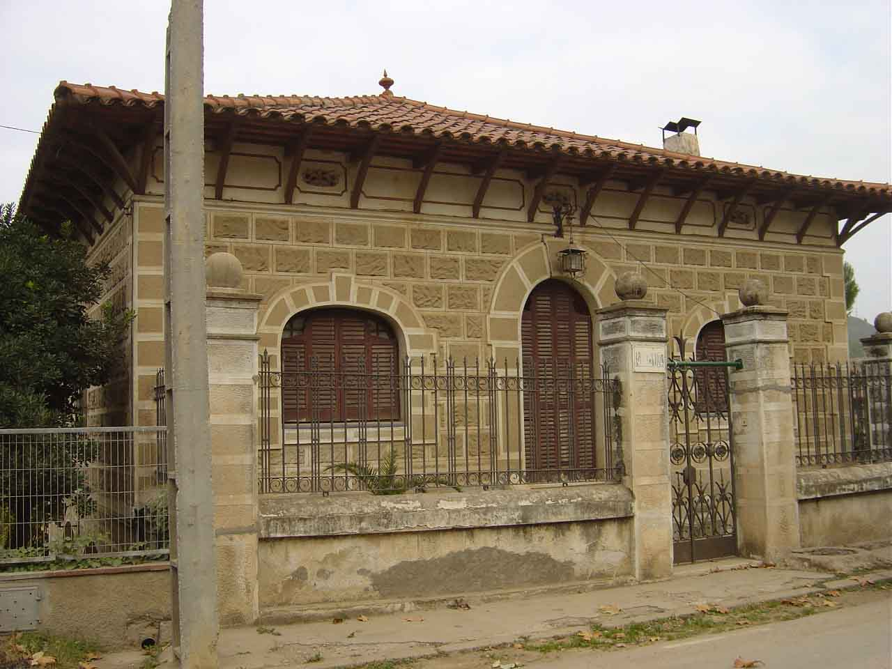

|  |
|
Nom de l’element: Poudevida
Clau d’identificació: A.26
Nucli o indret: Colònia del Carme (antiga carretera de Martorell a Terrassa).
UTM: X= 411.568, Y=4.592.454.
Règim del sòl: Sòl urbà.
1.1. Època de construcció i tipologia:
Casa d’estil eclèctic situada a l’antiga carretera de Martorell a Terrassa. L’edifici, d’una sola planta i de base rectangular, disposa de jardí propi. La coberta, de teules, és a quatre aigües; mentre que l’entrada presenta un arc de mig punt.
1.2. Estat de conservació:
Bo
1.3. Ús actual:
Habitatge.
1.4. Serveis i accessibilitat de la finca:
Accés fàcil des de l’antiga carretera de Martorell a Terrassa.
Casa d’estil eclèctic en bon estat de conservació.
3.1. Usos admesos:
Unihabitatge, residencial, restauració.
3.2. Condicions d’ordenació:
Segons Pla Especial a redactar.
3.3. Accés i serveis:
Accés fàcil des de l’antiga carretera de Martorell a Terrassa.
BPU (Bé Protegit Urbanísticament)